Routine Focus: the focus card, checklist, routine chat, week selector and the Start, Inbox and Skip sheets. 13 in use. Rendered from Storybook on the app background (#f4f4f4). Generated by tools/build-canvases.js; do not edit by hand.
also on Agents, Routinespackages/ui/organisms/AgentFormSheet
New agent / Edit agent — one form, three presentations, from `packages/design/Agents.dc.html`. The chassis `ResponsiveSheet` supplies them (phone bottom sheet · tablet 860px · desktop 720px), and `SlidingSwitch` supplies the URL / cURL toggle, so neither is redrawn here.
New AgentEdit AgentSave Failed
O02
InboxSheet
packages/ui/organisms/InboxSheet
The Inbox — `sheetInbox` in `packages/design/Routine Notes Final.dc.html`.
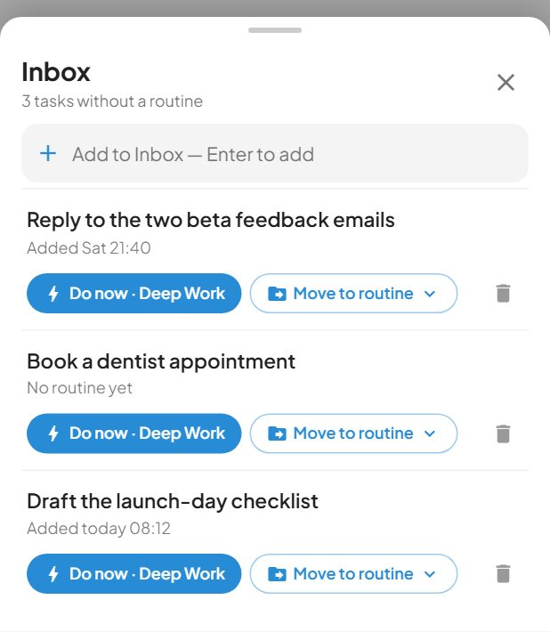
With Tasks
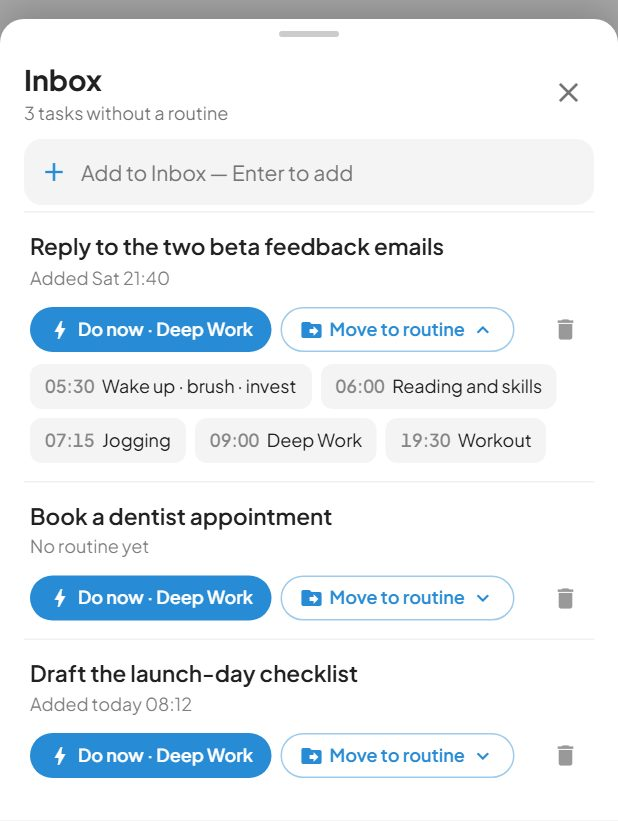
Move To Routine Open
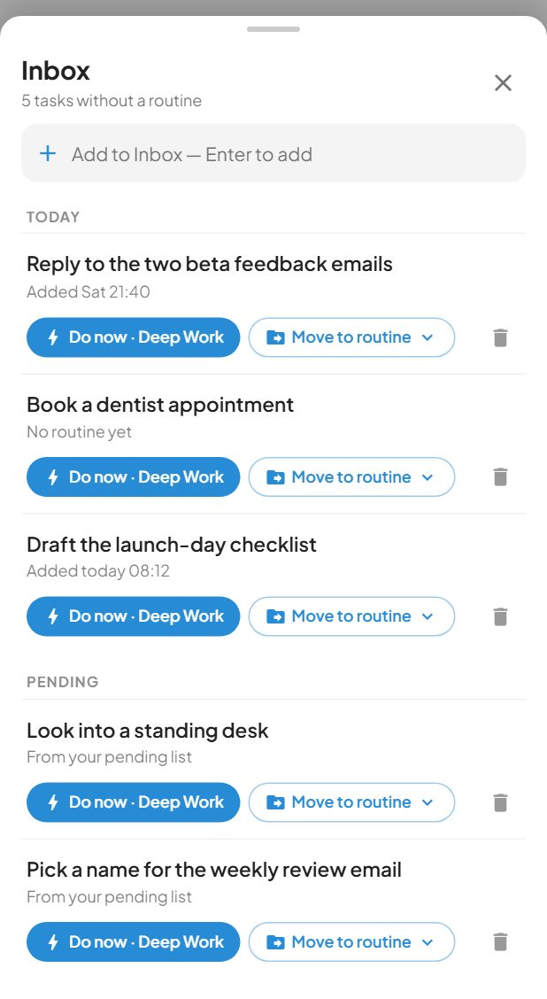
Today And Pending
O03
PaywallDrawer
packages/ui/organisms/PaywallDrawer
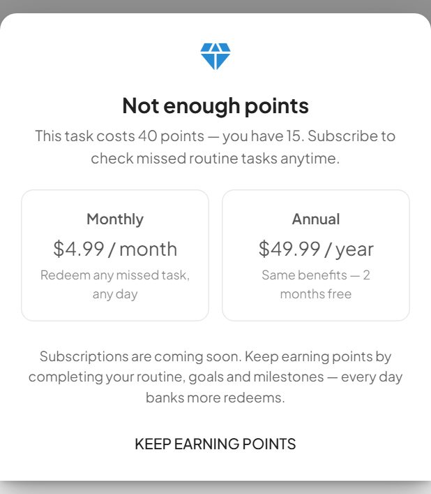
Insufficient PointsOut Of Points
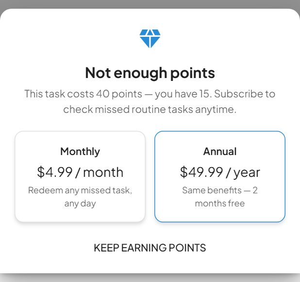
With Purchase Enabled
O04
QuickGoalCreation
packages/ui/organisms/QuickGoalCreation
Start Work — `sheetAction` in `packages/design/Routine Notes Final.dc.html`, the sheet the tick ring on an unticked routine opens.
Default
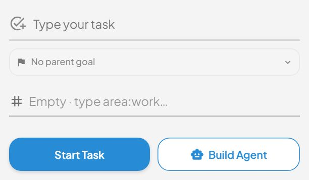
Custom PlaceholderDaily Goal
O05
RoutineBriefCard
also on Year Goalspackages/ui/organisms/RoutineBriefCard
"Before you start" — the area/project brief pinned as the first item in a routine's thread (design handoff § "Areas and projects live in chat").
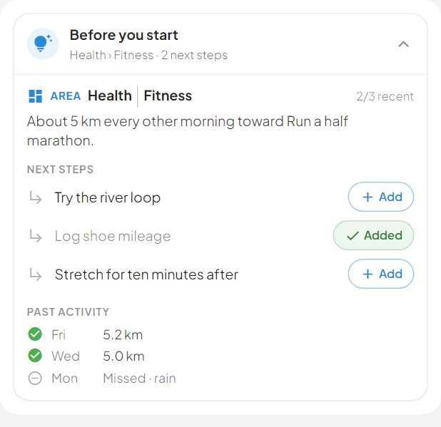
Open
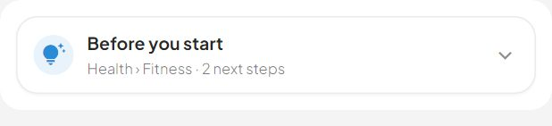
Collapsed
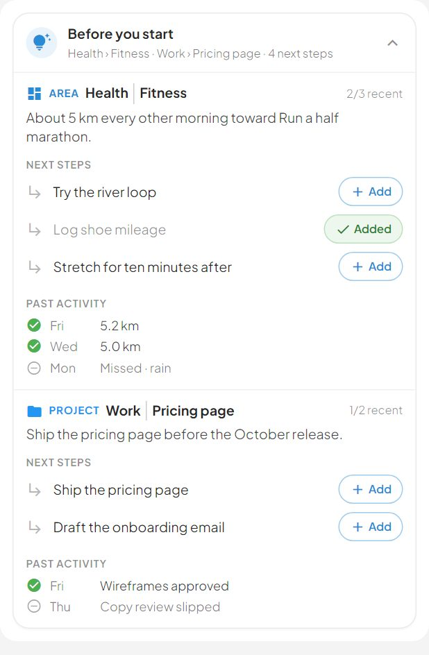
Area And Project
O06
RoutineCascadePanel
packages/ui/organisms/RoutineCascadePanel
Week / Month / Year panel shown inside the focus card when a cascade tab is active. One goal, its unit grid, and what it rolls up into.
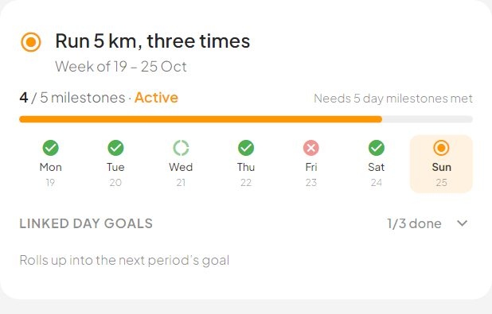
Week
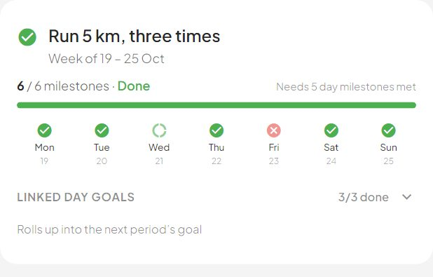
Week Done
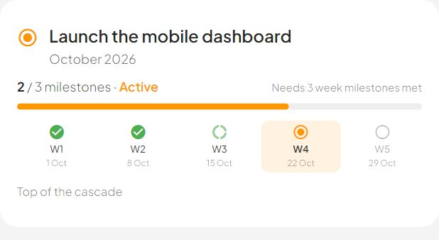
Month
O07
RoutineChatThread
also on Year Goalspackages/ui/organisms/RoutineChatThread
The routine's conversation. Bubbles, centred event pills, embedded live checkbox rows, "break it down" proposals with an Add-all button, and quick-reply chips under the last message only.
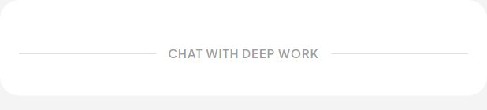
Empty
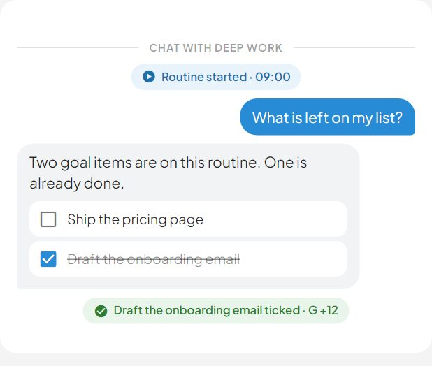
Conversation
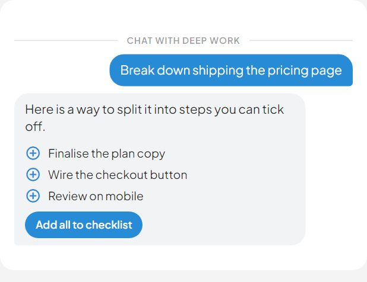
Proposals
O08
RoutineComposer
also on Year Goalspackages/ui/organisms/RoutineComposer
"Message Start Work…" — the composer under the focus card. The "+" opens the AI Search sheet; focusing the input collapses the checklist so the thread gets the height (design handoff § Composer).
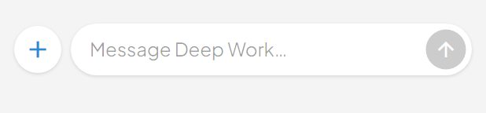
Empty
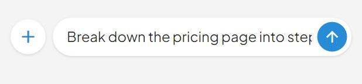
Typing
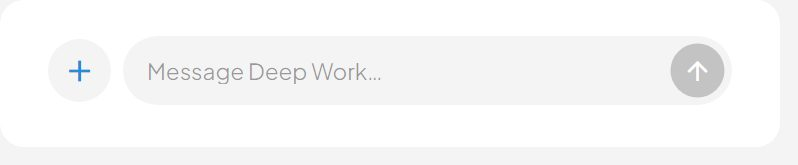
Tablet
O09
RoutineDeck
packages/ui/organisms/RoutineDeck
Phone card deck: the focus card, in the default slot.
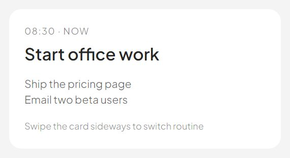
MiddleFirst RoutineLast Routine
O10
RoutineFocusCard
packages/ui/organisms/RoutineFocusCard
The focus card: one routine, concentrated. Status window at the top, the tick ring and title in the middle, then the checklist, then whatever the shell puts in the `thread` slot (the routine chat) — all in ONE scroll area, because the design treats checklist and conversation as a single column. Period tabs are pinned full-bleed to the bottom of the card.
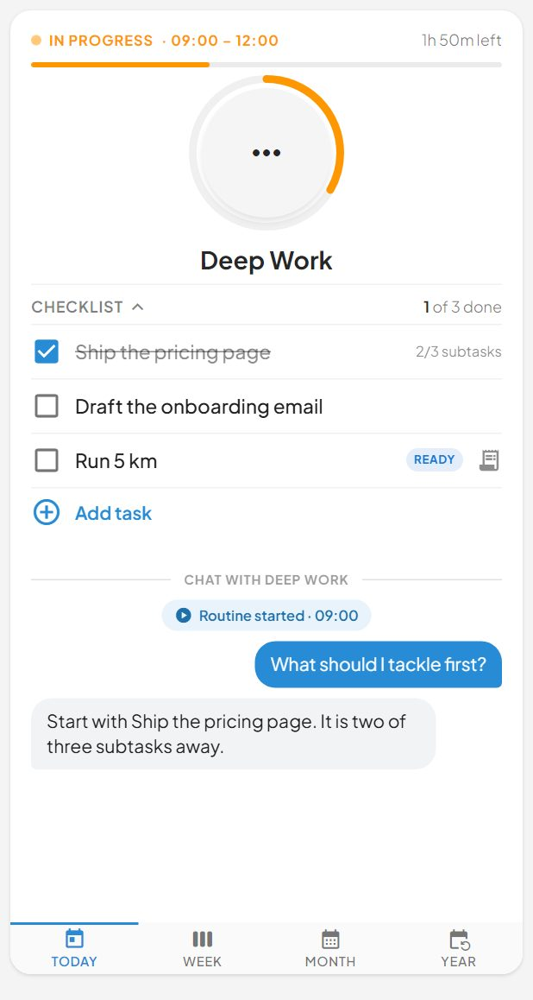
Phone Today
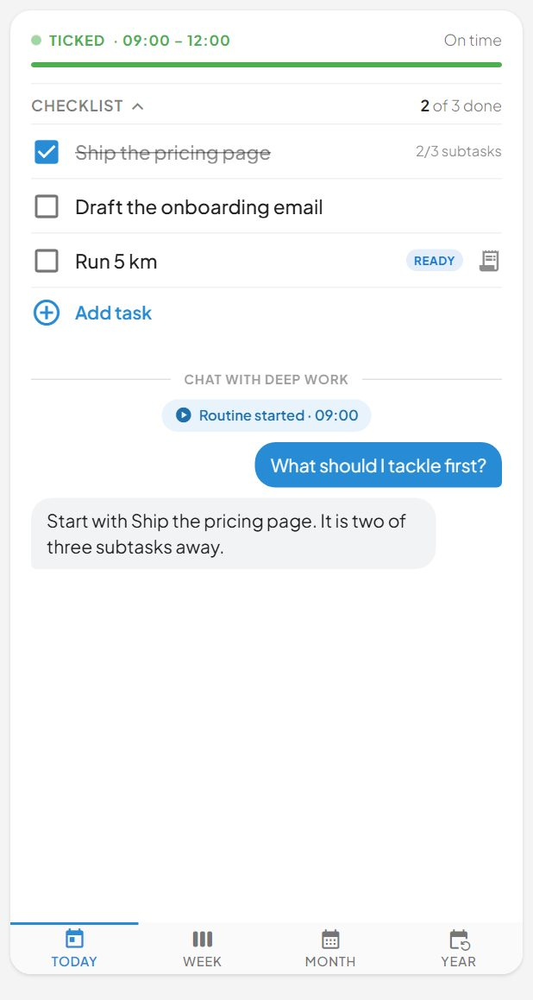
Phone Ticked
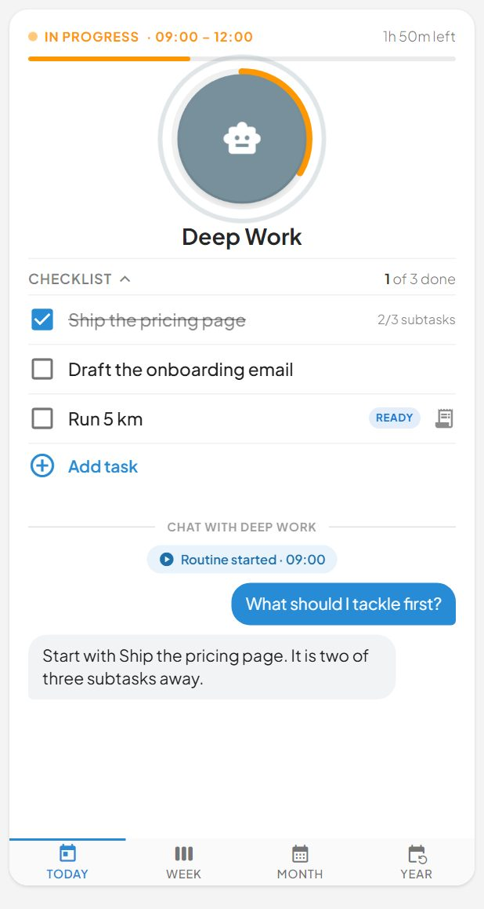
Phone Agent Waiting
O11
RoutineTopBar
packages/ui/organisms/RoutineTopBar
Phone top bar. "Home" fades out once the focused routine is ticked and the centre slot takes over: a 34px green ring plus the routine name, popped in after the tick animation lands. That ring is also the flight TARGET, so the page measures it through `ringTargetRect()` / `nameTargetRect()`.
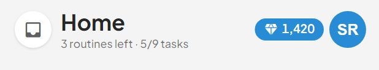
Default
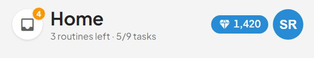
With InboxRoutine Ticked
O12
SkipDaySheet
packages/ui/organisms/SkipDaySheet
Skip day — `sheetSkip` in `packages/design/Routine Notes Final.dc.html`.
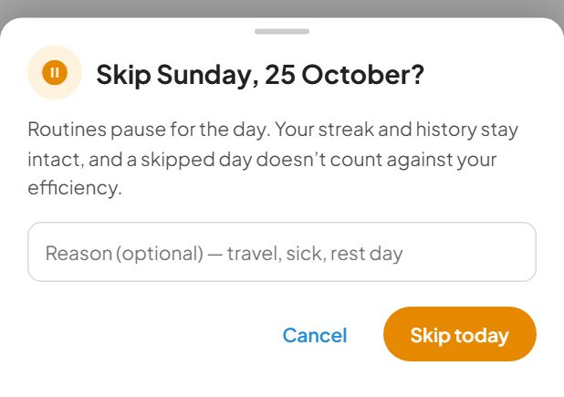
Phone
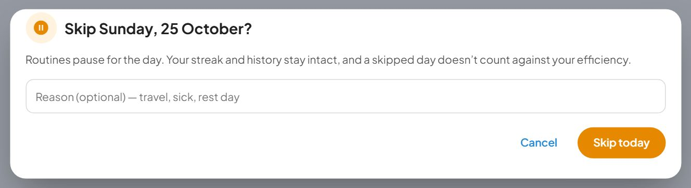
Tablet
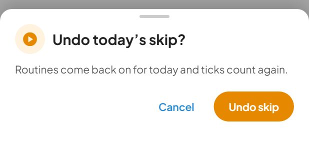
Already Skipped
O13
WeekdaySelector
packages/ui/organisms/WeekdaySelector
How much cell there is around the ring in the compact (header) form: the design's iPad and desktop frames both draw a 28px ring in a 38px cell. The cell does not stretch there — the strip sits beside the date at a 40px pitch (38 + the 2px gap), it does not spread across the row.